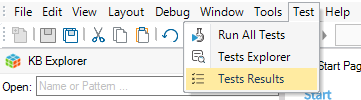

GXtest 4 is included inside GeneXus IDE, you can check it going to the "Test" option on the menu bar:  There are several GXtest versions for the different versions of GeneXus, it is necessary to install a compatible version. Installing GXtest Recorder (for Google Chrome)GXtest Recorder is a Chrome extension that allows you to record and playback user actions on any GeneXus web applications. You can find it in the Chrome Store. GXtest LicenseGXtest has both free and licensed features. See the details about the license model.
|
| Backlinks | |
| GXtest for GeneXus 17 Release Notes | Toc:GXtest v4 |